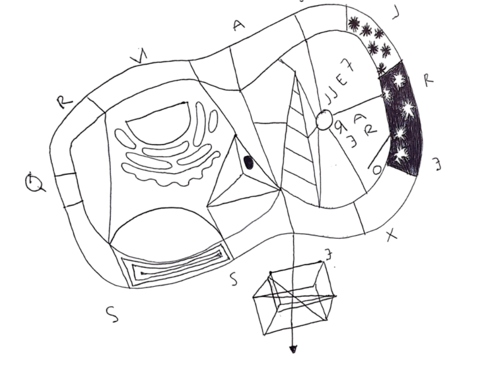
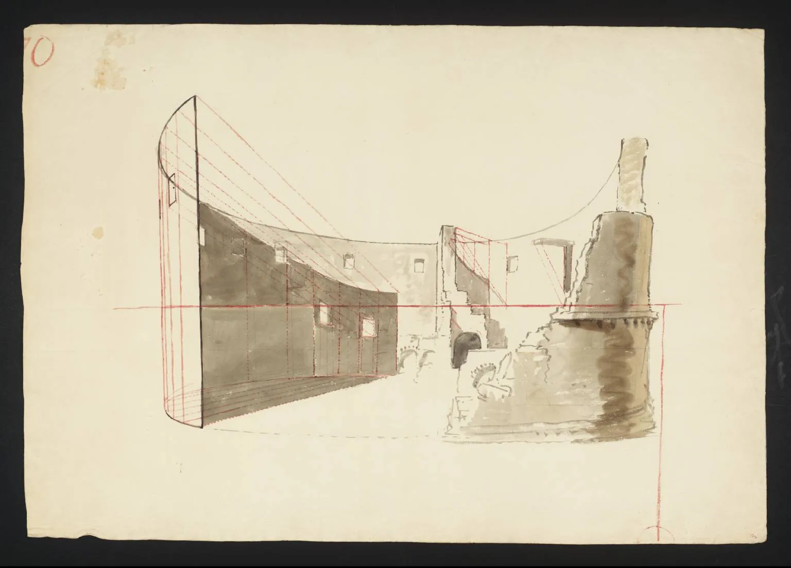
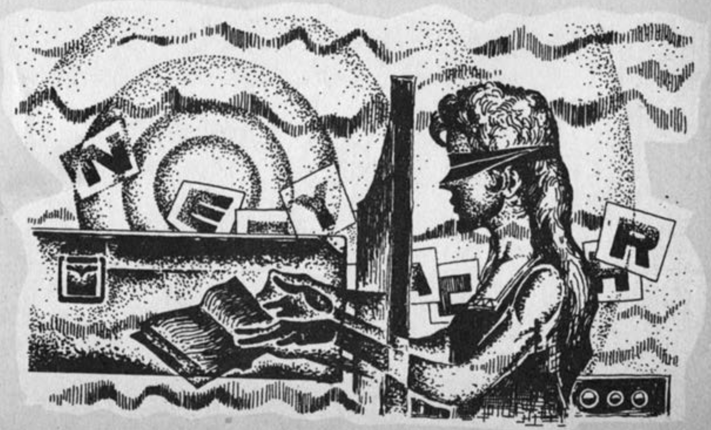
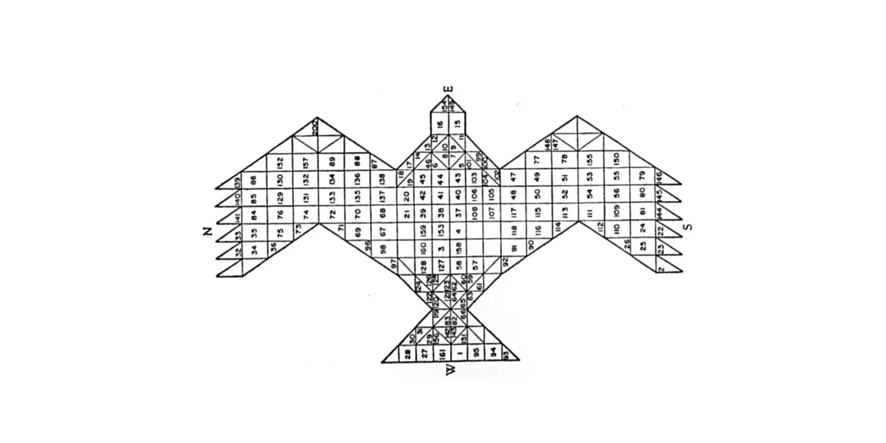
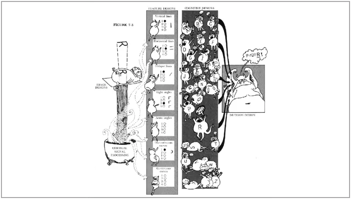
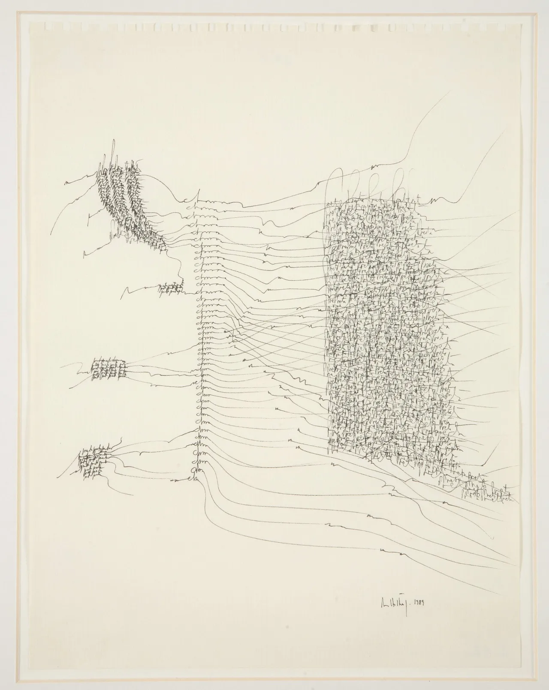
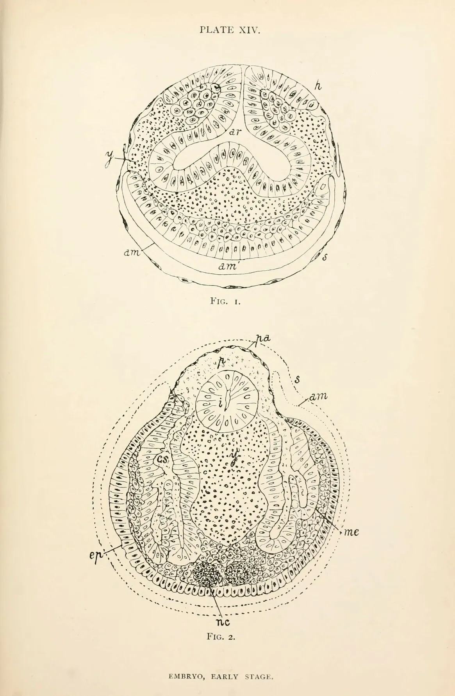
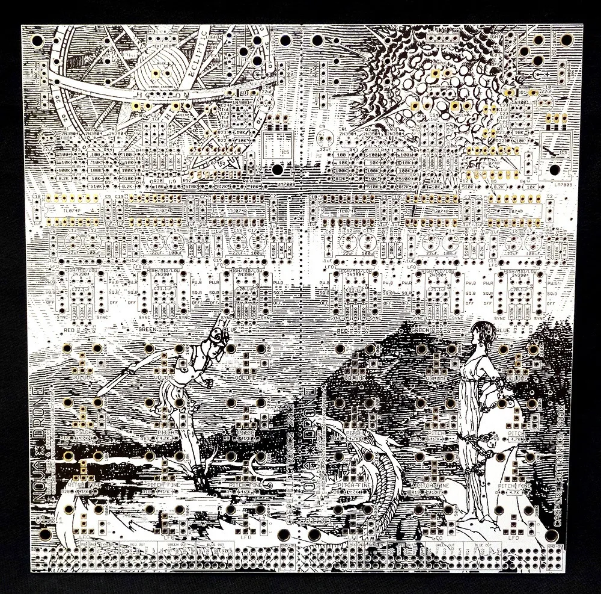
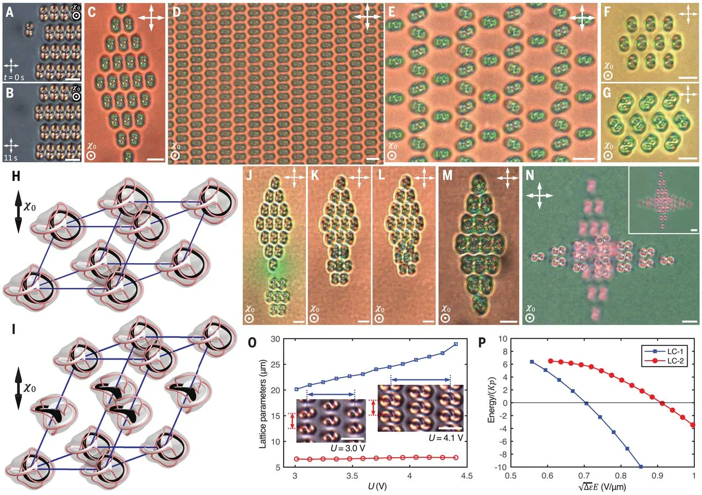

A non-comprehensive, ongoing collection of notes and thoughts.
Idea: The body is already being cloned in the virtual and analog too at the molecular level.
Not sure yet: Thomas Aquinas: spiritual objects/beings(?) are the combination of matter and form. Gravity and grace. Simone Weil did lots of repetition. Looping.
Question: Who was the Oracle of Delphi? What was she huffing? And why did Aristotle believe her? In Grexit times, she still holds her own as a riposte to the conservatism of making sense. The oracle processed group think as a poetry converting non-sense into sense.
Definition: Hypomnesis — the "making technical” of memory. For example, writing or photography are an example of memorializing something technically.
To look into: Network spirituality, Erik Davis
To look into: MiaBPD, the art project where the author/artist does not make the art, but makes the algorithm. Thinking of coding more like art. What would a poetics of coding look like?
Idea: The internet as a form of emergence. Even as far back as Plato they were thinking of some notion of virtual. Is internet the most modern, perfected form of it?
AlphaFold
Not sure yet: The overlap of scientific methods, rituals and aesthetics and religious. An attempt to communicate with angels through technology. Light.
To look into: Leibniz monadology
Key Words: Poetics, Biomedia, Structure, Mysticism, Optical Microscopy, Ambiguity, Apophatic Mysticism, Mediation.

Whether viewed as the circulation of meaning through language and signs or as a material interaction of practical relations between producers and consumers, or perhaps just a network, contemporary media theory approaches media with the implication that there is always some material or conceptual possibility waiting at the end of mediation.
That is, media always has the possibility of becoming something.
So then, what are the implications of this conception of media/mediation when the body and organic life itself become the objects of mediation?
Viewing "biomedia" through the lens of mysticism and myth making offers a complication to the traditional approaches for understanding and reading media objects. Mediating "bio" or life is an attempt, in a way, to mediate that which is inaccessible.
With the advent of technologies, like the large-scale deep learning model AlphaFold, it has become possible for organic life to be predicted, reproduced, and even created digitally. AlphaFold, specifically predicts the protein-folding sequences to an atomic level of accuracy, a task molecular biologists have called "the world's hardest jigsaw."
The reason I find mysticism, particularly traditions of apophatic mediation, as media theorist and philosopher Eugene Thacker suggests, so compelling for exporations of the body and visual depictions of its technical mediations is that it offers way of dealing with both the materiality of biological media "artefacts" (e.g. DNA) and its breakdown, which is an ongoing topic of interest. I also want to avoid falling into rhetoric of vitalism or essentialism of the body. Rather, I want to see if there is anything to be learned from mysticism to answer existential questions that modern biotechnology raise as well as its entanglement and historical connection to entertainment media (e.g. many special effects for movies coincided with scientific developments for biological imaging).
 Drawing from Joseph Mallard William Turner, Lecture Diagram 70: A Ruined Amphitheater c.1810
Insofar as this website is concerned, you may be wondering why create a separate space for collecting notes.
The first answer to this question is half practical, half conceptual. Inspired by Tiger Dingsun's brilliant website, both in design and concept, I want to help develop the notion of a poetics of digital text — an avenue for exploration of form beyond functionalism. The text isn't the only thing to be read.
The rest of this site will be some of the notes I've collected on this topic thus far, ranging from programmer and NYU professor of media theory, Alexander Galloway to pre-modern accounts of mediation of the divine.
The rapidly growing industry of international surrogacy raise questions about imaginations of biology and its relation to productivity and the ways they perpetuate a system of extraction similar to that of colonialism. Now, however, rather than through the abstraction of labor, the body itself becomes a place of alienation. Gestational surrogacy suggests a detachment where the subject of mothering work can be detached from the subject of sentimental maternity.
Natal alienation seems baked into the practice of gestational surrogacy that Kalindi Vora recounts in “Life Support: India’s Production of Vital Energy,” with her discussion of the Manushi clinic. In the Manushi clinic, a gestational surrogate is urged to live in one of the two hostels designated for clinical surrogates and even though commissioning parents will pay for the room and board, the women live apart from their children, families and communities. Usually they tell their families they are going to a distant city for a temp job. Many stayed in the hostel because of stigma in their communities around the work and a desire for anonymity. The clinics also want them to stay for purposes of surveillance, where there is a social fabric of “sisterhood”.
Biocapital relies on reproductivity as its primary motor.

The history of biopolitics can be understood in part through transnational consumption. We can see the continuation of racializaiton/genderization, there is logic that some part of the body and life can be taken away from the body. It is not just the body but affective reproductivity. Biological and affective reproduction. This makes the biological also social. The colonial technique of surrogacy isn’t overtly colonizing, but a continuation of colonizing logics. The condition of the colonial technique of extraction/acccumulation of vital energy is part of surrogacy.
“High technology fantasy is one of endlessly extended fertility and reproduction, where raising children can be postponed until a moment in the middle-class career or earning curve where the arrival of children won’t compromise the material underpinnings of the middle-class lifestyle in the North”
Anthropologist Marilyn Strathern says that the imagination of biology is a platform for “reproducing the future”, a Euro-American belief and “life as vital energy” has been made available and extracted from India, in addition to “affectively necessary labor” as Gayatri Spivak discusses. This is part of the legacy of colonialism. Outsourcing of biological functions.
Vora's definition of outsourcing:
“outsourcing, as a discourse, describes the utilization of new communications technologies to manage production in a transnational chain by assigning components of production, administration, and support to several different locations.”
The body mediated in biotechnology is seen as informational and not a complex biological entity, and yet attempts to approach what is beyond the body. This tension is pertinent when thinking about the kinds of networks that exist within biotechnology, where the information of the organic is spread out onto nodes or in code, but enters into a kind of mystic darkness, or black box.
Little attention has been given to a convergence of these thoughts, that is, the convergence of a mystic understanding of mediation and the meditations of the body through biotechnology, which rest on assumptions of a vital force or ‘code’ accessible in the body. In a way, the biotechnically mediated body is at once an attempt to represent, or even transcend, nature and the divine but what is mediated from the body is, or rather is made to be, informational and coded.
Mystic mediation is about non-information and what is not known or accessible. What could the implications of this be when we think of certain biomediated process as a kind of ritual? It is not simply a mediation of nature and the divine, but the methods of information coding and systems are yet tied to mystical practices. This complication is the entry point for this paper.
 Illustration from Frits Staal, “Greek and Vedic geometry” Journal of Indian Philosophy(1999), via Matteo Pasquinelli, depicting the plan for a vedic altar for fire ritual. Art historian Doris Srinivasan refers to Vedic representations in terms of "ritual as icon."
Lev Manovich's thought, as told through Alexander Galloway, in his book Interface Effect says that the computer is visually cinematographic, materially digital, and logically computational. Galloway asks “how does open source shape systems of storage and trannsmission of knowledge” rather than comparing digital open source knowledge with other forms of knowledge. Therefore, the point of focus is on the effect it has rather than a comparison to other systems (that may be entirely different)
Coding offers a situation similar to writing, through which you can think and do the technical together and a “certain disturbance of the person” can occur that happens via flashes of technology that constitute a cybernetic kind of subbjectivation of the coder. In this wayp rogramming and philosophy look much like each other.
Philosopher Yuk Hui:
“Philosophical concepts can be seen as inventions that try to overcome the incompatibilities or even indifferences between two orders. Hence philosophy remains technical in this project.“
What’s most interesting to me here is this interplay between constraints and possibilities. Poets constrain their work using various structures, but also build upon and selectively break apart those structures by incorporating their own idiosyncratic use of language. Through offering both references to (perhaps multiple) systems of shared references and collective knowledge and one's own personal frameworks, poets create new worlds from this combination of different shared frameworks for interpreting reality and the poets own personal reality, worlds that the audience is able to semi-inhabit, and explore over time.
 Selfridge’s (1959) computational Pandemonium Model, as illustrated by Leanne Hinton in: Lindsay and Norman (1972). Pandemonium architecture is a theory in cognitive science that tries to schematize how the brain processes visual images.
Cinematic condition— the cinematic condition is one of the Ring of Gyges—the self becomes a viewing self and the world becomes a world viewed. The self has to negate itself. To watch a movie you must be a masochist (pleasure from your own pain).
 Drawing of calliphora erythrocephala
1. Cavell: Painting is a world, photograph is of a world (index). By extension, Galloway thinks that cinema is a proejction of worlds. And the computer is simply on a world. The computer is not obsessed with the embodied human form (the face, the hand, etc.) as a painting, photograph or cinema is. It does not aim to make man an object because the computer is this object in and of itself. There are no characters in a computer, there is no system of celebrity (except ourselves)—profiles not personas drive the computer. The computer network is the grand parade of perfected affects. And when something is perfected it is dead. Galloway then thinks that the computer is an anti-Ring of Gyges. The wearer of the ring is free to roam around in plain sight and the world retreats into alterity —> the world no longer indicates to us what it is, “we indicate ourselves to it and in doing so the world materializes in our image.” (p. 13, iInterface Effect). So then, if movies are masochistic, the pleasure of the computer is sadist. To be in relation with the world informatically means to be in a relation with the world that is abstracted, manipulated, modeled, preempted, synthetically transformed, etc. The effect is that the truth of “what something is” inn reality becomes less and less important than simulating it effectively, because we have perfected a language for it: and when something is perfect, it is dead. 1. Cartesian self: projects representations (the thinking mind) back inward toward a previous representation —> reflexive knowledge??? Galloway thinks that Copernicus was wrong (why?)

I might call this methodology “chimeric worlding”, to emphasize the fact that these worlds, which graphic designers and their audience cohabitate through their work, are cobbled together from the DNA of various other worlds, and are richer because of this multiplicity. And I choose this word “chimeric” not only for its meaning in the biological sense, i.e., “composed of material (such as DNA or polypeptide) from more than one organism”, but also for its more metaphorical sense: “1) existing only as the product of unchecked imagination, fantastically visionary or improbable, 2) given to fantastic schemes.” (Merriam-Webster)
Under the methodology of chimeric worlding, there is a call for epistemic disobedience, as the decolonial theorist Walter Mignolo calls it, for we all operate under symbolic systems of oppression. As graphic designers we have the ability to take those pervasive systems and strip them for parts, combining them with other, more marginalized knowledge. We can take what has been deemed ‘esoterica’ or ‘folk’, and give them equal importance with conventional structures of knowledge, this so-called ‘rationality’ or ‘common sense’ that has been naturalized. So much of what is considered ‘good’ or ‘correct’ or ‘legible’ design comes from these naturalized conventions. Part of this methodology of “chimeric worlding” involves the possibility of co-opting the aesthetics of structuralism, while recognizing it’s inherent arbitrariness, and to see that this arbitrariness is in fact emancipatory, and enables us to layer multiple logics and systems of knowledge. There’s an opportunity here to mine history and culture of various frameworks as inspiration for organizing content, and for developing one’s own individualized visual language. (Responsibly, of course, but here is where I might invoke my identity as a queer designer of color operating in the Western world, to say that I am interested in co-opting white knowledge as well as utilizing structures from my own culture. This is why, for example, I am interested in both Taoist cosmology, as well as the aesthetics and lore of Christian mythology, even though I have absolutely zero cultural connection to Christianity).

In his book The Estranged Object architect and theorist Michael Young talks about the aesthetics of realism. While aesthetics may seem to be far removed from science and biotechnology, the concept of scientific objectivity emerged alongside the development of what would be considered media or art forms like photography.
Plato–we are stuck in a world of shadows, never really able to see things as they are. Is the real representational? Is it just a problem of representation? This is what speculative realism is for, the various layers of representation to “fill in the missing pieces” and is what creates a more “whole” experience, something more “real”. Werner Herzog’s film “Cave of Forgotten Dreams” is an example of this, in which he uses visual and imaginary layers as a means of representing the cave paintings which are only partially accessible (literally and metaphorically) to us.
 Images of molecular knots captured from a microscope.
Aesthetics of the real—abstraction is like an extension of realism, in that it increases the “tension in representation” by way of reduce/fragment/deform the figural likeness of an object. This is not to conflate realism and reality. That is like conflating aesthetics and ethics. Not all aesthetics (of architecture or other) are a representation of political ideology. Realism’s power is its ability to call attention to the difference/tension between reality and its representations. Implication of realism is creating an “aesthetics of doubt” in which the aesthetics of realism creates an estrangement form the object. One example of this is Jeff Wall’s photograph Morning Cleaning which depicts an ordinary event of someone cleaning a house, but the photo is itself a composite of many photographs, which removes the blurred depth of field that would normally occur in an image. The way it is presented is in a large print with illumination behind it, giving even detail throughout. Its realism is closer to that of physical objects than optical projections—its even detail is closer to the tactility of a hand-drawn depiction(?) than an image. —> *This seems relevant to something that Virtual Reality would be good for: an optical experience that is closer to the real. That feels more like reality*
What are the implications of this? For photography, which is a mechanically assisted medium by nature that is indexing reality, its task now is “to overcome its literal object hood both through the medium’s representation and through its depiction of reality.” —> Fried calls this, when done right, “absorption.” And he links it to a historical continuation of painting. “Absorptive” aesthetic triggers an estrangement of realism—>leads to a critical reflection that is based on neither irony nor distancing rhetorical gestures. For Benjamin, the aesthetic experience is keeping estrangement alive. *The author distinguishes aesthetic estrangement from 1. dependence on psychological state 2. “shock” that is cathartic or ameliorating. It can be alienation or allure, doesn’t have to be one or the other 3. its essentialist connotations (i.e. it doesn’t necessarily reveal a deeper or more essential truth). Estrangement is a qualitative experience There is more to objects than our relation to them. They withhold certain aspects of their object-hood from our understandings.
Young goes on to say:
“Objects withdraw from each other, constituting a reality that we can never fully access...[theere is an] allure of strange objects that appear familiar, but reveal themselves to be something other after a period of further attention.”
3000 Years of Algorithmic Rituals — Matteo Pasquinelli
How We Ended Up in the Era of 'Quantitative Aesthetics' – Ben Davis
ChatGPT or the Eschatology of Machines – Yuk Hui
The Wayles Abyss, Mysticism and Mediation – Eugene Thacker
What is Biomedia? – Eugene Thacker
The Interface Effect – Alexander Galloway
Print is Flat Code is Deep – Katherine Hayles
Objectivity – Lorrain Daston, Peter Galison
Hildegard von Bingen– Wikipedia
If you have any thoughts on these notes, I'd love to hear them! Email me at frank.carber@gmail.com *Thank you Tiger Dingsun for inspiration for the layout of this website*